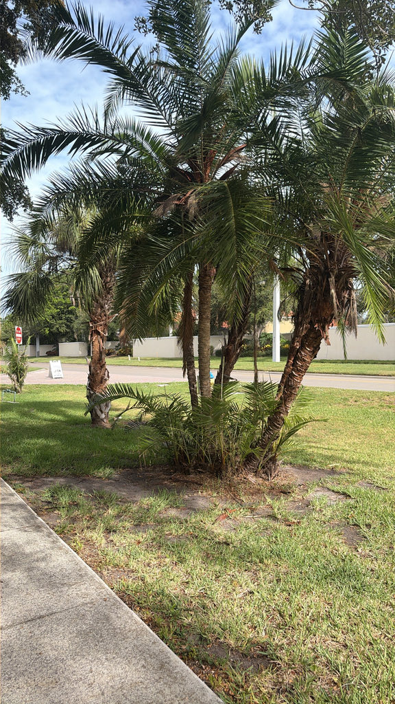

- Native to sub-Saharan Africa, where it grows in clumps along rivers and streams. The multiple trunks lean outward from the base — the reclining habit that gives it its name — creating a sculptural form different from the typical upright palm.
- Produces small date-like fruit eaten by birds and wildlife. The dates are edible but small and not commercially significant.
- Hardy and adaptable. One of the palms used in botanical and zoological gardens worldwide for naturalistic African habitat planting.
- The clustering habit and arching trunk form make it visually interesting in a collection that includes many single-trunk palms.
Non-native. Native to sub-Saharan Africa, from Senegal to Ethiopia and south to South Africa. Grows along rivers, streams, and in forest margins. Member of Arecaceae — the palm family.
- The Reclining Date Palm grows the way its name suggests: in a clump of multiple slender trunks that lean and curve outward from the base, each crowned with arching, feathery fronds, so a mature specimen looks like a fountain of palm trunks. It is native to sub-Saharan Africa, where it lines rivers and streams from Senegal to South Africa.
- It is a close relative of the edible date palm and produces small orange-brown date-like fruits - edible but thin-fleshed and not commercially important - that birds and mammals eat. Like other Phoenix palms, its lower fronds are modified into stout spines near the trunk, so it is sited away from paths.
- Its clustering, multi-trunked form makes it a dramatic specimen, and it is one of the more cold-hardy tropical-looking palms.
Small date-like fruit eaten by birds and fruit-eating mammals. The dense clustering growth provides nesting and roosting structure. In its native African range a significant wildlife tree along waterways.
Pinnate (feather-shaped), arching, with narrow leaflets. Similar in structure to other Phoenix palms.
Small, oval, orange-red to dark purple at maturity, in large hanging clusters. Edible but small and not commercially significant.
Multiple trunks from a shared base, leaning outward — the reclining habit. Each trunk is ringed and fiber-covered at the base.
Clustering palm, individual trunks 20 to 40 feet. The outward-leaning multiple trunks are the identification signature.
The multiple outward-leaning trunks from a common base distinguish this from single-trunk Phoenix palms. The small hanging fruit clusters when present.
The small dates are edible fresh or processed, though not commercially significant; the seeds shouldn't be swallowed.
It has no significant toxicity to people or dogs.


- © Ruby Meador (CC-BY-NC), via iNaturalist
- © Randall Carter (CC-BY-NC), via iNaturalist